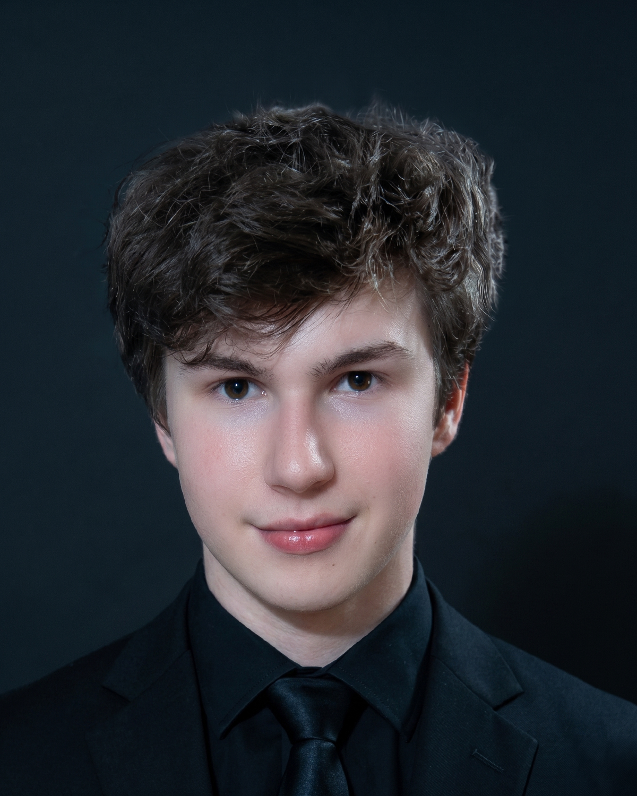
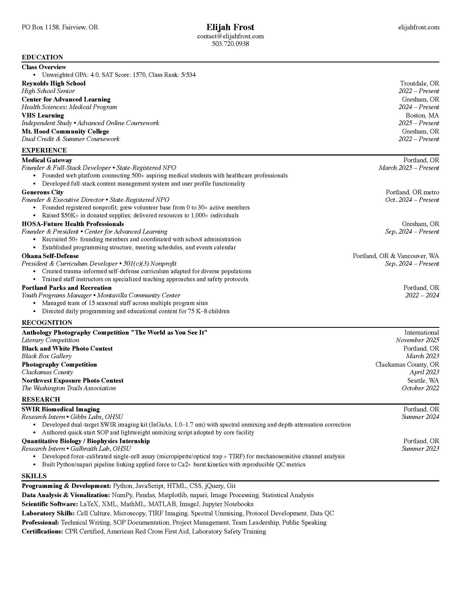
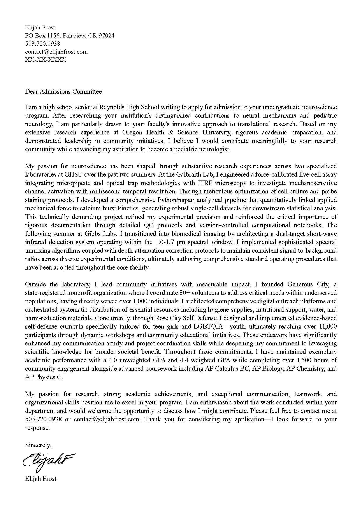
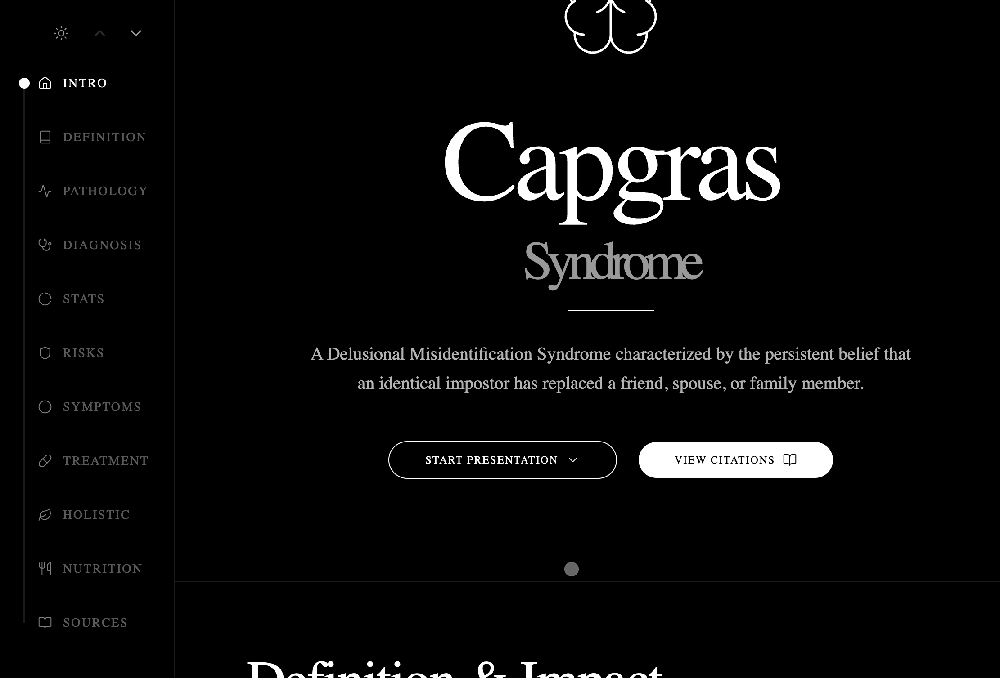
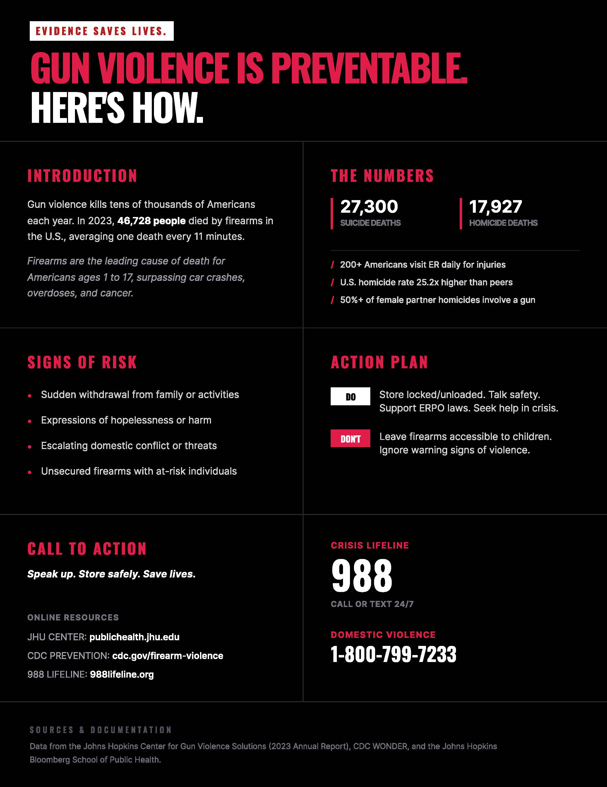
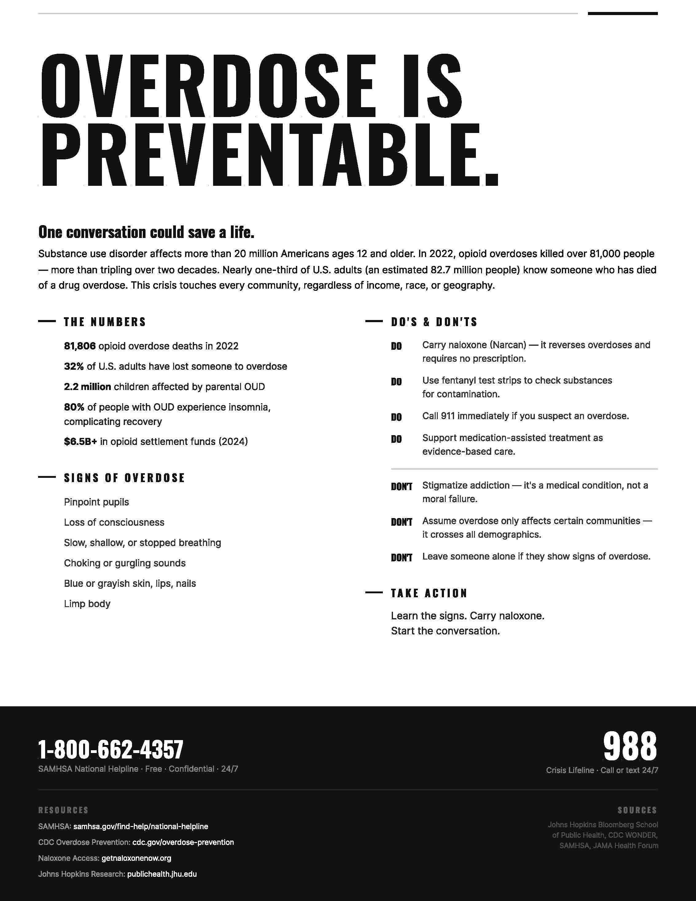
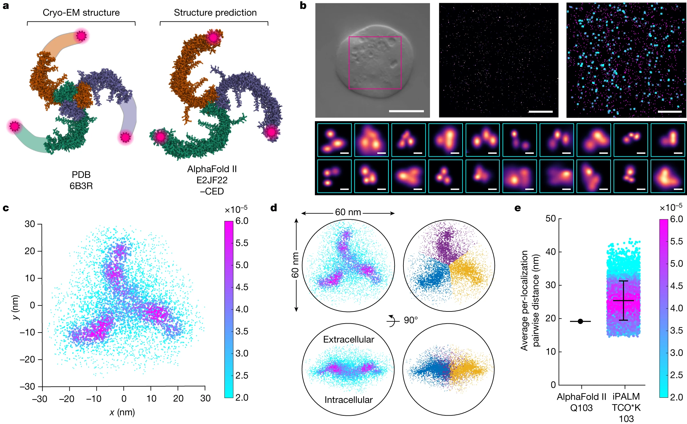
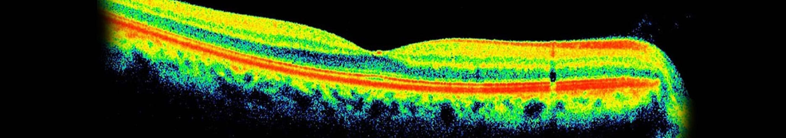
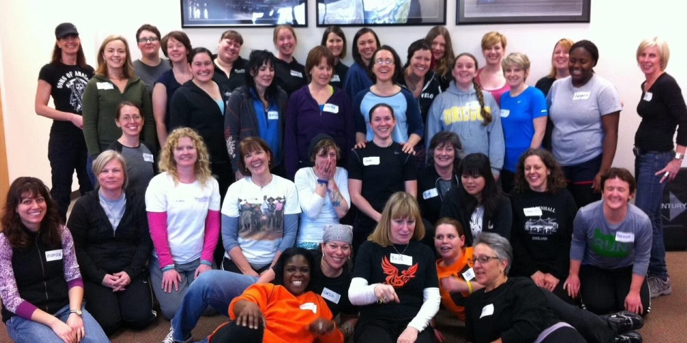
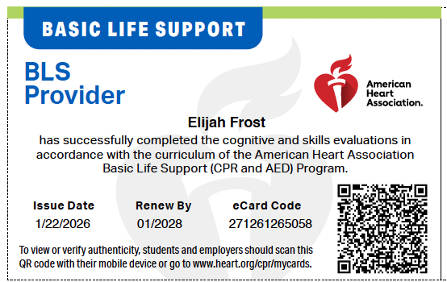

Born and raised in Portland. Parents grew up in Wisconsin and Oklahoma, met in New York City, then moved to Portland.
Severe dyslexia — at the 99th percentile of severity and the first percentile of performance on a clinical assessment, with sustained impact across school and daily function.
Long-standing mental-health challenges pushed me toward psychology, which is inseparable from medicine — and medicine has been the only career I have considered.

Lead camp counselor, Montavilla Community Center, Portland Parks and Recreation — summers of 2024 and 2025, returning for 2026.
Freelance photographer, since 2020.
Full-stack web infrastructure for elijahfrost.com and projects.elijahfrost.com.

Written for undergraduate neuroscience admission, with pediatric neurology as the long-range target.
Maps two summers of OHSU research and three nonprofits onto the training pathway.
Pathway: neuroscience B.S., medical school, pediatric neurology fellowship.
Neuroscience in Medicine deck, produced for CAL Health Sciences.
Maps the training pipeline from undergraduate neuroscience through medical school, residency, and pediatric neurology fellowship.
Why this matters. Pediatric neurology takes more than a decade of training — mapping it now lets the high-school and undergraduate years feed forward instead of running in parallel.

Definition. Delusional misidentification syndrome marked by the fixed belief that a close family member, friend, or pet has been replaced by an identical impostor — with face recognition and general cognition typically preserved.
Mechanism. Dual-route face processing — the ventral visual stream recognizes the face, the dorsal-limbic route assigns affective familiarity. Capgras follows when that affective signal is severed and the patient rationalizes the empty match as an impostor.
Care. Diagnosis of exclusion through psychiatric interview and neuroimaging — treatment directed at the underlying cause: antipsychotics for primary psychosis, cholinesterase inhibitors for dementia, alongside environmental stability and consistent caregivers.
Why this matters. A clean dissociation between recognition and emotional valuation — with prevalence reaching 15 percent in Alzheimer’s, Lewy body, and Parkinson’s populations.

Written for Oregon high school students and families — citation-backed.
United States firearm deaths totaled 46,728 in 2023.
Firearms are now the leading cause of death for Americans ages 1 to 17.
Strongest evidence supports extreme risk protection order laws and safe storage requirements.
Why this matters. ERPO laws and safe storage are interventions a primary-care visit can actually deliver.

Same audience and citation-backed format as the gun-violence flyer.
United States opioid overdose deaths totaled 81,806 in 2022.
Naloxone is now available over the counter and reverses overdose within minutes.
Fentanyl test strips and bystander training are first-line harm-reduction interventions.
Why this matters. Tools any clinician can teach in a single visit.
EPA and DHA — essential polyunsaturated. Status affects fetal brain development, pediatric cognition, and adult cardiovascular risk.
FDA-approved for severe hypertriglyceridemia. Evidence supports prevention of fatal coronary heart disease, ischemic stroke, and age-related cognitive decline.
Salmon, sardines, herring, flaxseed, chia, walnuts, and algal DHA.
Adequate Intake of 1.6 g/day for adult men, 1.1 g/day for adult women. No RDA or Upper Limit in the United States. EFSA reports no safety concern up to 5 g/day combined.
DHA is the dominant omega-3 in the human retina and brain gray matter — which is why deficiency first presents as visual and cognitive symptoms.
A 22-page research paper with more than 30 peer-reviewed citations in APA 7. The question: does the hippocampal-entorhinal system encode physical space, or general relational structure?
Sources span O’Keefe and Nadel’s cognitive map through Constantinescu, O’Reilly, and Behrens (2016) on grid-like coding for non-spatial relations.
Why this matters. The same circuits underlie memory loss in Alzheimer’s disease, spatial disorientation in pediatric epilepsies, and developmental disorders of memory — the representational question is a prerequisite for understanding how the system breaks.

Project. First single-cell quantification of the Piezo1 mechanosensitive channel activation threshold.
Method. Custom single-cell stimulation rig that applies a calibrated point force, paired with a fluorescent calcium indicator for real-time channel activation.
Analysis. Image-analysis pipeline at millisecond temporal resolution, time-locked to the force trace.
Finding. Activation threshold near 180 piconewtons — roughly the force required to lift a single virus particle.

Context. Short-wave infrared (900–1700 nm) penetrates tissue with less scattering and autofluorescence than visible light.
Build. Dual-channel SWIR system for simultaneous acquisition of two spectrally distinct fluorophores in the same field of view.
Pipeline. Scattering correction and deconvolution against measured point-spread functions — a 35 percent reduction in background noise.
Deliverable. SOP now used by the lab for calibration, alignment, and routine acquisition.

Co-founder and lead instructor since October 2022.
Runs under the City of Portland Safe Blocks Program — curriculum for teen girls, women, and LGBTQIA+ youth.
Presented outcomes to Portland City Council — FY 2025–2026 funding secured.
Founder and director of one, co-president of the other — both registered Oregon nonprofits operating across the Portland metro.
Oregon nonprofit I founded in October 2024 and currently direct, 501(c)(3) in process, operating across the Portland metropolitan area. Partners include Portland Homeless Family Solutions, Blanchet House, and regional mutual-aid networks.
Separate 501(c)(3) where I serve as co-president and curriculum developer. Trauma-informed self-defense for participants with diverse abilities and trauma histories.

CNA. Certified Nursing Assistant — Northwest N.A.C. Training, Washington State. Scope: vital-signs measurement, patient mobility and transfers, ADL support, infection control, documentation.
BLS. Basic Life Support — American Heart Association. Healthcare-provider level CPR for adults, children, and infants, with AED and bag-mask ventilation.
CPR/AED. American Red Cross. Lay-rescuer adult and pediatric CPR with AED operation.
Name the buckets — don’t read every tool.
Python, JavaScript, TypeScript, HTML, CSS, jQuery, Git.
LaTeX, XML, MathML. Full courses authored in LaTeX for Pre-Calculus, AP Statistics, AP World History, AP U.S. History, and Anatomy and Physiology.
napari, image-processing pipelines, version-controlled lab notebooks.
English — and three years of ASL coursework.
Patient consultations, neurological examination protocols, case-presentation rounds.
Intake sessions, cognitive behavioral therapy interventions, documentation review.
In-hospital observation through CAL Health Sciences — first sustained exposure to a working hospital unit outside of a research building.
Scholastic Art and Writing Awards — National Anthology Finalist for “The World as You See It.”
Black Box Gallery — second place, Black and White Photo Contest.
Clackamas County Photography Competition — first place. Work displayed in county government buildings.
Washington Trails Association Northwest Exposure Photo Contest — first place. Work exhibited at the University of Washington.
The four years were mostly self-exploration — the developmental function of adolescence.
The recurring challenge has been saying no. I have repeatedly built schedules that exceed the hours in the day even without sleep, so the next step is pacing.
Health Sciences strengthened the résumé and documented sustained interest in pediatric neurology, which I acknowledge openly — though the community at CAL has mattered more. After a public charter upbringing, Reynolds was a jarring shift, and CAL has been a more pleasant environment.
Neuroscience B.S. as the intended major.
Fit. Top-ranked undergraduate neuroscience program, School of Medicine ranked third nationally for research, Kennedy Krieger Institute on the same campus.
Highest annual research expenditures in the United States — near $3.6 billion.
Four-year cost projection near $371,000 with annual financial-aid renewal.
Johns Hopkins as the target.
Johns Hopkins School of Medicine.
Pediatrics.
Pediatric neurology.